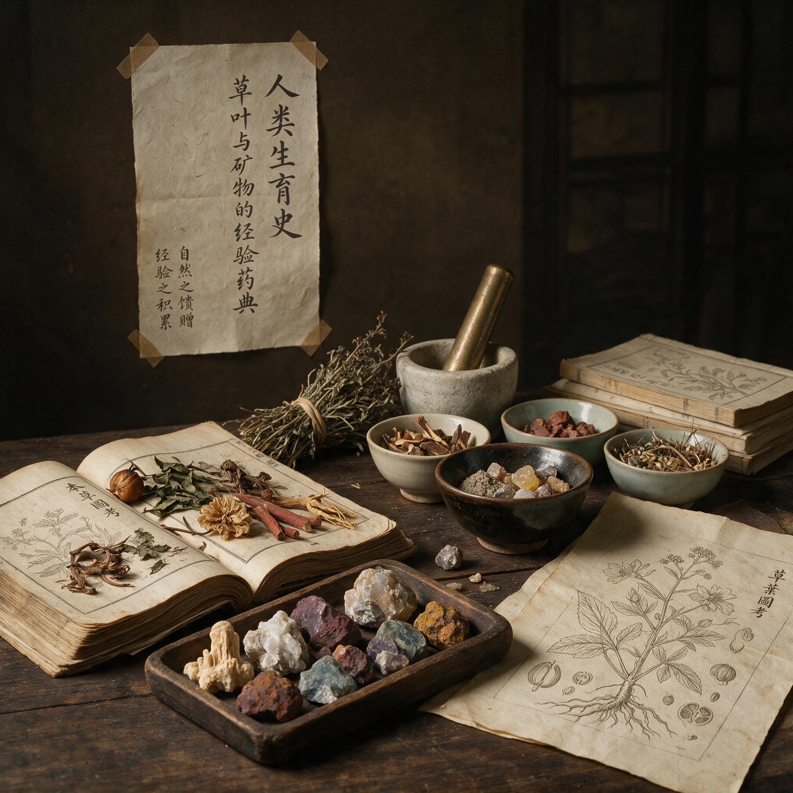

第 2 章
草叶与矿物的经验药典
时间拨回到底比斯药剂师的工作台上，一份莎草纸处方摊开着。处方上写的是如何配制一种阴道栓剂：鳄鱼粪、发酵蜂蜜、碳酸钠。三种材料都不难获得。鳄鱼粪来自尼罗河西岸的采集者，他们追踪鳄鱼夜

草叶与矿物的经验药典：历史出版插图
AI 生成插图，非史实影像。
间出没的河滩，拾回干结的粪便，卖给城内几家固定的药房。蜂蜜由上埃及的养蜂人沿河运来，装在密封的陶罐里。碳酸钠来自瓦迪·纳特伦的盐碱地，是制作木乃伊时也用的天然碱。药剂师把三种材料按比例混合，搓成一个拇指大小的球状物，交给来取药的女仆。
整个过程没有神秘仪式，没有神谕，也没有生殖崇拜的符号。它只是一项需要动手操作的工作。
这份处方后来被收进《卡洪妇科莎草纸卷》，标注的年代大约在公元前1850年。它是现存最早的阴道避孕物书面记录之一。但它显然不是起点。
一种配方要被写入医书，必须先经过无数次的试用、调整和口传。在文字记录之前，尼罗河谷的女性已经试验过植物纤维、树脂、油脂和动物分泌物。她们不可能等到有医师在场才开始行动。生育的压力落在她们身上，而不是落在医师和抄写员身上。
从行为调节转向物质干预，这一步比表面看起来更大。第一章讨论过的体外排精、禁欲、延长哺乳期等方法，都还停留在对性行为或身体节律的自我约束上。阴道避孕物则不要求男方中断什么，也不要求女方长期克制什么。它把一个外部物体放进身体内部，以改变生育发生的条件。这意味着人类开始把生育控制当作一个可以通过材料介入的身体过程。
这不是一次科学突破，却是一个重要的技术转向。埃及药典的内在逻辑来自一套独特的身体观念。在埃及医学中，子宫不是一个固定不动的器官。它被想象成可以在腹腔内游走的活物，会被强烈的气味吸引或驱赶，像一只对气味敏感的动物。如果子宫离开了正常位置，就会导致疼痛、不孕或异常出血。治疗的办法是用香熏从上方吸引它回来，或者用恶臭的药物从下方把它赶回原位。这个观念解释了为什么埃及的阴道药物中大量使用气味强烈的物质：粪便、树脂、香料、植物汁液。它们不是用来杀精的，至少不是今天意义上的杀精。它们的作用是改变子宫的位置、环境或状态。
把这套观念说成“错误”很容易，但这无助于理解历史。埃及医师对身体的观察并非全无根据。他们看到了经血、精液、分娩时的羊水和产后的恶露，看到了这些液体在身体内外的流动与积聚。他们把身体类比为尼罗河流域，把疾病解释为流体平衡的破坏。河流干涸导致干旱，河水泛滥导致涝灾，身体的疾病同样被理解成“太多”或“太少”。
因此，阴道避孕物的第一条逻辑是调节湿度、温度和气味的平衡。鳄鱼粪被归为“冷而干”的物质，用来中和精液的“热而湿”。蜂蜜作为基质，既能让各种粉末粘合成型，也被认为可以“安抚发炎的组织”。碳酸钠干燥、收敛，性属“干而冷”。
金合欢是另一个更著名的例子。埃及妇女把金合欢叶尖碾碎，混入椰枣和蜂蜜，制成栓塞。这个配方常被现代科普文章拿出来做证据，说古埃及人无意中发现了一种天然杀精剂：金合欢含有阿拉伯胶，发酵后产生乳酸，乳酸恰好是今天某些避孕凝胶的成分。
这个说法不算全错，但推得太远。古埃及人不知道细菌，不知道酸碱度，更不知道精子的存在。
他们观察到的是：金合欢与蜂蜜混合后会发酸，而酸味在他们的医学语言里对应着“干”和“冷”。他们是在用法度内的语言记录一种可以重复的操作，而不是在进行药理学实验。
同一套逻辑在美索不达米亚的泥板上也有呼应。亚述和巴比伦的医师使用没药、杜松、河泥和含铅矿物配制阴道药物。这些配方常与堕胎药列在同一块泥板上，有时甚至共用同一种药，只是剂量或用法不同。
一块公元前7世纪的尼尼微泥板提到，将河泥与油混合后置于妇人体内，“可使其不妊”，而同一配方“加倍分量，可逐出三月之胎”。这块泥板出土于亚述巴尼拔图书馆遗址，材质为黏土，文字为楔形文字，属于王室收藏的医学文献。
这样的记录在今天读者看来像是一份便捷的医药手册，但在当时的书写者笔下，它只是众多治疗方法中的一条。没有迹象表明他们为此感到道德上的不安，或者认为需要在避孕与堕胎之间划出明确界限。他们处理的是一个连续体：不让精液留下来，或者让已经形成的胚胎离开子宫。手段可以共享，因为目标在时间线上前后相邻。这个模糊地带后来成为经验药典最大的麻烦。
当宗教和医学正统开始清理知识体系时，最容易受到攻击的正是这类“既可避孕又可堕胎”的药物。但在尼尼微和巴比伦，这还不是问题。问题是如何把这些知识交给需要它们的人，而不会在途中丢失关键细节。
地中海东岸与北岸的希腊罗马世界，把这种知识推向了更具理论色彩的高度。希波克拉底学派的著作《论妇女疾病》不满足于罗列配方，它试图解释为什么某些药物能阻止受孕。
答案来自四体液学说：血液、粘液、黄胆汁、黑胆汁的平衡决定健康与疾病，也决定生育能力。子宫的状态被描述为“冷热干湿”四种性质的不同组合。受孕需要子宫“温暖而湿润”，这是种子生长的土壤。如果子宫“过冷”或“过干”，种子就不能着床。避孕因此被转化为一个体液调节问题：用“热而干”的药物对抗“冷而湿”的状态，或者用收敛的药物“关闭”宫颈口。
雪松油在希腊罗马药典中占据重要位置。它被认为“热而干”，可以暂时改变子宫环境。明矾则是一种强收敛剂，可以收缩组织，减少分泌。
医师们用橄榄油或明矾溶液灌洗阴道，用浸过雪松油或薄荷汁的羊毛团塞入宫颈口。这些操作的目的不是杀死精子，而是让子宫变得不适于受孕。石榴皮、橡树瘿、五倍子等富含鞣酸的材料也出现在配方中，它们确实能产生收敛效果。今天的研究者可以指出鞣酸的化学特性，但希腊医师不必知道这些。他们观察到的效果——分泌物减少、组织紧缩——已经足够让药物进入药典。
索拉努斯在公元2世纪写下的《妇科》，是古典时代关于避孕最详尽的文献之一。他在罗马行医，面对的病人主要是城市里的富裕妇女。
这部著作的特殊之处在于它明确区分了避孕与堕胎。索拉努斯认为避孕是预防，堕胎是破坏；前者可接受，后者则危险且不道德。但他在著作中也承认，许多同行并不作此区分。
索拉努斯提出的避孕建议分成两类：一类是行为性的，包括计算月经周期、避开易受孕的时段、性交后立即蹲下并打喷嚏；另一类是物质性的，包括用蜂蜜、橄榄油或醋涂抹宫颈口，用海水或醋灌洗，以及使用多种阴道栓剂。
他的记录透出一个重要信息：这些知识在罗马帝国的城市里并不难获得。药剂师、助产士、草药摊贩、甚至贵族家庭里的老年女奴，都拥有各自的避孕知识。一个罗马妇女可以同时咨询医师、向商贩购买进口草药、听女奴讲述她在北非使用的偏方。知识没有统一的来源，也没有统一的权威。
这种分散和流动，正是经验暗河的早期形态。它让知识传播得更广，但也让每一次使用都像抽签。同一个配方可能在某次有效，在另一次完全无效。
索拉努斯自己就承认了这些方法的局限。他记录了失败案例，并建议医师在避孕失败后做好处理妊娠的准备。这个建议本身就说明了一切。
有效性极不稳定，这是经验药典最核心的特征，也是它最容易被后人误解的地方。现代研究者做过一些推测性的评估。金合欢栓剂在理论上可能产生乳酸，但浓度是否足够、放置位置是否准确、性交时间是否配合，这些变量根本无法控制。明矾和铅盐确实能抑制精子活力或改变酸碱度，但同时也会损伤黏膜，增加感染风险。
至于鳄鱼粪和蜂蜜的混合物，它的主要作用可能是物理屏障：一团粘稠的粪浆在宫颈口形成暂时的堵塞。但这个屏障也把细菌带入了阴道。问题不在于古埃及人、古希腊人“缺乏科学知识”。问题在于他们使用的是一套不同的解释系统，而这套系统与实际身体过程之间的对应关系极其薄弱。
当模型是想象出来的，针对模型的干预就只能在某些时候碰巧成功。身体平衡、冷热干湿、三体液、气血运行——这些理论各自都有内在逻辑，都能解释为什么某些干预应该有效。但它们不是建立在对精子和卵子机制的认知之上。经验药典没有精确的靶点。它只能调节一个模糊的“身体状态”，然后等待结果。
这种模糊性也带来了一个意想不到的后果：它让避孕知识极难被标准化，却极容易被污名化。当一种药物可能避孕、可能通经、也可能堕胎时，使用者的意图决定了它的性质。同一种配方在一个妇女手里是节育手段，在另一个妇女手里是终止妊娠的工具。意图不可见，操作可见。于是外界看到的只是药物，而药物的道德属性取决于旁观者的判断。
印度次大陆的药典在这一点上表现得更加明显。阿育吠陀医学的经典文献《阇罗迦集》和《妙闻集》在公元前后的几个世纪逐步成形，其中关于妇科的内容包括促进生育、调节月经和阻止受孕的不同药方。阿育吠陀的理论核心是三体液：风、胆汁、痰。三者平衡则健康，失衡则生病。生育被视作三种体液高度和谐的状态，而避孕则是通过药物、饮食或行为打破这种和谐。
印度药典大量使用植物材料。姜黄粉混入酥油制成阴道栓，楝树油浸透棉团后塞入，芒果籽粉与岩盐制成糊剂。
这些配方与埃及、希腊的药典有明显的家族相似性：都是把干燥的粉末或油性物质放进阴道，都追求某种“改变环境”的效果。但印度的解释框架完全不同。姜黄在阿育吠陀体系里属“热性”，用来对抗生育所需的“冷性”条件。楝树味苦，属“干燥”和“净化”，用来清除多余的分泌物。芒果籽有收敛作用，岩盐则被认为能“吸收湿气”。这些解释听起来和希腊的四体液学说一样自成一体，但它们彼此之间并不相通。
一个阿育吠陀医师不会用“冷热干湿”这样的希腊术语来讨论问题，一个希波克拉底学派的医师也不会理解“风”和“胆”如何影响受孕。动物性材料在印度药典中出现得更多。象粪、牛尿、蛇蜕都被记录为阴道避孕物的成分。
现代读者很容易把这些看作毫无根据的巫术，但这样的判断过于草率。牛尿在阿育吠陀中被赋予“净化”的力量，被用于多种疾病。象是力量与多产的象征，象粪被认为能“对抗过度生育”。蛇蜕象征更新与转化，用于“改变子宫状态”。
这些材料的选择遵循的是象征逻辑和宇宙论逻辑，而不是药理学逻辑。在阿育吠陀医师眼中，它们的合理性不亚于任何矿物质或植物。一个文化内部的医学体系有多严密，它对外部观察者来说就有多陌生。经验药典的“经验”并不等于“有效”，但它也不是随机的胡闹。它是一套完整的知识，只是这套知识的目标不是现代生物学意义上的干预。
离开印度次大陆，转向东亚。早期中国的避孕药典在传世文献和出土材料中都能找到踪迹。
马王堆汉墓出土的帛书《胎产书》和《养生方》可以追溯到公元前2世纪，其中既有助孕的内容，也有“断产”“去胎”的药方。这些文本把生育控制放在“养生”和“房中”的框架里来讨论，既涉及性生活的技术，也涉及药物的使用。稍晚的《神农本草经》把药物按上、中、下三品分类，其中明确提到“绝子”“堕胎”“断产”功效的药物有数十种。它们构成了一部独立的中国经验药典。
麝香是这部药典里最引人注目的药物之一。它来自雄性麝鹿的腺体分泌物，在中医里被归为“辛温走窜”之品。中医的理论语言里，麝香“通经活血”，能“催产下胎”。
这个概括同时包含了避孕和堕胎两种用途：所谓“通经”，就是把该来的月经引下来，不让妊娠继续；所谓“下胎”，就是把已经形成的胎逐出体外。从汉代到明清，麝香一直是宫廷和民间通用的节育药。它的效力被广泛承认——明清时期的不少医书警告孕妇必须远离麝香，甚至不能闻它的气味。现代药理学证实，麝香酮确实能刺激子宫收缩，大剂量使用可能导致流产。
但作为常规避孕物，它的效果并不确切。古人使用麝香的方式一般是小剂量长期服用，或者制成丸剂塞入阴道。这种用法能否阻止受孕，在古代文献中并无可靠的统计数据。
汞剂是另一类重要的中国避孕物。水银、朱砂、轻粉都能“断产”。汞化合物的确能干扰生殖系统的功能，但这是通过全面毒害身体来实现的。长期使用汞剂会让月经停止，表面上达到了节育的目的，实际上却可能是中毒导致的卵巢功能衰竭。
明清医案中记载了一些因服用汞剂避孕而死亡的案例，但这些记录没有阻止汞剂的流通。原因很现实：对于一个不想要生育的妇女来说，慢性中毒的风险往往比意外怀孕的可能更值得承担。这个残酷的权衡在所有经验药典中都存在。它不是中国特有的悖论。它是一个结构性的困境：在安全的避孕手段出现之前，所有的避孕都伤害身体。跨区域比较到这里可以进入一个更抽象的层面了。
埃及、美索不达米亚、希腊罗马、印度和中国，在缺乏直接知识传播的情况下，发展出了高度相似的物质策略：把某些东西做成栓剂、糊剂、浸剂或灌洗剂，放进阴道，用以阻止精液进入子宫或改变子宫状态。材料有所不同——埃及多用动物粪便和树脂，希腊罗马依赖矿物盐类和植物油，印度偏好植物浸剂和动物分泌物，中国侧重麝香和汞剂——但物质介入的基本形式是一致的。为什么？
有一种解释是知识传播。丝绸之路确实存在。中国的麝香从汉代起就经由中亚进入波斯和阿拉伯市场，印度的胡椒和肉桂在罗马帝国的市场上并不罕见，埃及的没药和雪松油在地中海世界广泛流通。物质材料的传播是真实发生的。但材料流通不等于配方流通。
麝香被运到波斯，不等于波斯医师理解了“辛温走窜”的解释框架。他们更可能把麝香放进自己的医学体系里，重新定义它的性质和用途。药物可以跨越文明边界，理论体系却很难翻译。埃及的“冷热干湿”没有传入印度，希腊的四体液学说没有改写中医的“辨证”逻辑。
如果知识传播是主要动力，核心配方和核心解释应该更接近。事实上，不同文明选择的药物和它们给出的理由都各自独立。真正的共同点在底层观念。
原始身体经验指向几个基本事实：阴道是可进入的腔道，宫颈口有分泌物，性交涉及液体交换，月经与生育有关。这些事实不对观察它的文明隐藏。在此基础上，不同文明发展出了各自的解释系统。它们都把身体理解为通透的、可被外部物质影响的状态，都把子宫视为一个需要调节的环境，都把分泌物管理当作干预的关键。这些相似性来自共同的生物基础，而不是单一起源的知识传播。经验药典的全球性不是一种“影响”的故事，而是一种“平行演变”的故事。这本身就是一个值得记住的判断。
但也正因如此，经验药典在走向体系化之前，就已经自带被污名化的风险。这不是说它注定失败。恰恰相反，它在民间存续了两千年，甚至更久。问题在于它始终无法提供一套稳定的因果解释：为什么某些药物有效，另一些无效；为什么同一种药物在不同人身上产生不同结果；
为什么有时候能防止怀孕，有时候却导致流产。经验药典没有能力回答这些问题。它只能用更大的理论框架来包裹不确定性，而庞杂、矛盾、时灵时不灵的配方，恰好成为后来的正统医学否定它们的入口。
这种否定的机制在不同的文明中走上了不同的道路，但结果都指向同一个过程：知识从公开领域转入民间口传，从医药文献转入私人经验。也就是经验暗河的真正源头。
在埃及，鳄鱼粪和金合欢栓塞使用了至少一千年。罗马统治时期，这些配方仍然出现在科普特文本中。但基督教化之后的医学正统开始清除与异教仪式有关的治疗手段。鳄鱼粪、蜂蜜、草木灰等配方被重新定义，不再是可以写入药典的医学知识，而是应当被禁止的巫术。莎草纸卷被锁进修道院书库，有些被人为损毁，有些在誊抄时被刻意跳过。
那些抄写员并不是对避孕有道德洁癖。他们只是在执行一套新的知识秩序：凡是不符合正统信仰的治疗手段，都不应当被继续传播。但这个秩序执行得并不彻底。民间还在用这些配方，只是不再有医师敢于公开记录它们。
口传网络接替了书面文献。底比斯城的一位科普特修道院抄写员可能跳过了避孕药方，但同一座城里的助产士仍然在教产妇如何配制鳄鱼粪栓塞。她不识字，也不需要识字。
在希腊罗马世界，索拉努斯的著作通过阿拉伯语和拉丁语的翻译片段流传下来，但它在中世纪的拉丁欧洲几乎失去影响力。教会法学家对婚姻中的生育问题持严格立场，认为人为阻止生育违背自然法和婚姻的目的。不过，民间实践仍然在继续。农村妇女、城市助产士、江湖医生和部分修道院的草医，各自保存着一些配方。有些配方变得极其简化：在性交后迅速起身、用醋冲洗、把某些草药扎成束放入体内。
知识的传播渠道从公开的医学教育变成了私下的经验传承。经验暗河开始流动。
伊斯兰世界的情况有所不同。阿拉伯医学大规模继承了希腊罗马的文献，包括索拉努斯、希波克拉底和盖伦的著作。9世纪到13世纪，巴格达、大马士革、科尔多瓦的医师们在翻译和评注中重建了古典药物学体系。
拉齐和伊本·西那的著作中记载了大量避孕方法，从阴道栓剂到口服药，再到灌洗剂。教法学家对避孕的态度相对宽容：大多数法学派允许在特定条件下避孕，尤其是当继续怀孕会威胁母亲健康或家庭经济无法承受时。这个宽容建立在男子同意和“不造成永久不孕”的前提上。避孕因此仍然是丈夫控制下的决定，女性本人的意愿并未得到制度化的尊重。
但至少知识可以公开存在，不必转入地下。然而，教法对堕胎的限制仍然是严格的。多数法学派认为胚胎在120天后获得灵魂，此后的堕胎等同于杀人。120天之前，不同学派的分歧极大。一些学派允许在120天内服用药物终止妊娠，另一些则禁止一切形式的堕胎。
这个神学上的分界，比古代的“连续体”更加精确，但它实际产生了一个新的问题：那些同时具有避孕和堕胎作用的药物，究竟能不能用？如果一种药物可能阻止受孕，也可能导致流产，它是否属于被禁止的堕胎药？拉齐和伊本·西那都讨论过这个问题，但没有给出统一的答案。结果因地而异，因学派而异。
经验药典中那些最“多用途”的药物，逐渐成为教法辩论的对象，而不是日常可以公开使用的避孕手段。中国的情况一直保持着另一种面貌。中医没有把避孕看作道德问题，至少在传统医书的语境里没有。麝香、汞剂、红花、水蛭等药物在历代本草和方书中公开记载，医师们讨论它们的适应症、剂量和禁忌，就像讨论任何其他药物一样。
但中国同样存在明显的知识分层。宫廷有专门的御医和方士为皇室女性服务，他们掌握的配方往往极为昂贵：麝香来自西域或西南山地，价格高昂；某些进口药材只有皇亲国戚才能长期使用。民间妇女依赖于游方郎中、稳婆和家族内部的口传。她们用的药物更便宜，但风险也更大。
汞剂就是一个典型例子。对于无力负担麝香的普通家庭，汞剂是少数可以稳定获得的“断产”药物，而它同时会缓慢摧毁使用者的身体。知识不是被禁止的，而是被定价的。可以获取并不等于可以安全获取。中国经验药典也面对过正统化的压力。
宋元以来，儒家士大夫对女性身体的规范日益严格，医书中的妇科内容受到礼教话语的约束。到了明代，一些医家在书写避孕药方时会加上“厉禁”“不可轻用”之类的按语，仿佛要在治病的药典和道德训诫之间画一条线。清代医学文献中关于避孕的内容有所收缩，但民间实践仍在继续。
根据地方志、医案和文人笔记的零星记载，江南地区的药铺里可以买到多种“断产方”，其中不少沿用着汉唐以来的药物组合。这些记录说明：当官方医学对某些知识变得不那么友好时，知识的流动并未停止。它只是变得更加隐蔽。
这是经验药典留下的最重要遗产。它比任何单一药方都更持久，比任何理论体系都更顽固。它是一种知识形态：不依赖书面文献、不依赖官方承认、不依赖统一理论，却能在不同文化、不同时期、不同社会中反复出现。它的载体是妇女之间的口传、是药铺里不能公开宣传的偏方、是助产士手中的经验记录、是游方郎中不愿写进书里的看家本领。这些实践分散、重复、彼此矛盾，却构成了经验暗河的第一段河道。
暗河之所以是暗河，不是因为它的水浑浊，而是因为它在地下流淌。它绕过了官方知识体系的审查，也绕过了理论化的门槛。它的代价是永远无法积累出可靠的因果关系。一个配方在甲地有效，在乙地无效，在丙地有效但致死，这些信息无法被系统地比较和修正。经验暗河中的知识没有机制来淘汰错误，只有机制来传播希望。每一个新配方都可能被希望放大，每一个失败案例都可能被遗忘。这才是经验药典无法自行走向科学化的根本原因。
科学化需要的不只是好运气，不只是某种碰巧有效的草药。它需要一套可验证的因果链条：为什么有效？对谁有效？在什么条件下有效？效果能持续多久？副作用有多大？经验药典无法提供这些答案。它只能提供操作步骤，然后依赖个体的运气和身体的偶然性。
这就是为什么，在底比斯药剂师写下处方三千七百年后，世界卫生组织评估现代杀精剂时得出的年失败率仍然高达百分之十八到二十九。换句话说，每五名使用者中大约有一人会在一年内怀孕。
这个数字与古代金合欢和鳄鱼粪栓塞的实际效果可能相差不大。经验药典没有被科学完全超越，它只是被重新解释。在更宏观的层面，避孕知识从口头经验进入文字记录，从民间药方进入医学著作，并不意味着它从此走上了一条进步之路。这只意味着它获得了物质载体。这个载体可以承载知识，也可以承载偏见。它可以被翻译、转抄、改编，也可以被删改、禁止、重新发现。
草叶与矿物之间的物质介入，是人类对生育控制的一次重要尝试，但它同时也是一个连续失败的故事。失败并不在于没有找到真正有效的药物，而在于没有建立起一种允许知识逐步优化的制度。经验药典的弱点在每一个文明中都显现过。
埃及的药方在基督教化后被斥为异教巫术。希腊罗马的妇科文献在中世纪拉丁世界几乎失传。印度的阿育吠陀药典在殖民时代被英国医疗机构系统贬低。中国的麝香与汞剂在近代卫生运动中被归入迷信和危险品。这些否定并非全都出于纯粹的科学理由，但经验药典自身的混乱为否定提供了方便。
它无法为自己辩护，因为它的每一次辩护都依赖个案和经验，而不是普遍规律。回到开篇的工作台。堆在药剂师面前的鳄鱼粪和碳酸钠，如今已经变成一条河流中的几粒细沙。它们曾被认为可以阻断生育，也曾被认为可以驱逐魔鬼，还被主教和教法学家宣判为可耻之物。最终，它们退出了文字记载，却从未退出实践。谁也不知道那些不识字的女人们，在多少个世纪里是否还继续使用同样的配方。也许在尼罗河沿岸的某个村庄，鳄鱼粪作为一种秘密的节育手段一直传到近代，直到第一批有效而致命的化学杀精剂出现在药架上。
配方退出文字记载却从未退出实践。在维尔茨堡，1628年的审判记录中保存着一段简短的问答。被告是一位助产士，记录上只写了她的名字“安娜”，没有姓氏。指控的罪名不是施行巫术，而是“使用魔鬼的草药阻止妇女受孕”。审判官问她从何处习得此术，她回答：“从我的母亲，从她的母亲。”配方消失的地方，正是暗河最深处。